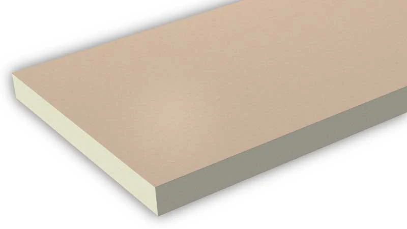
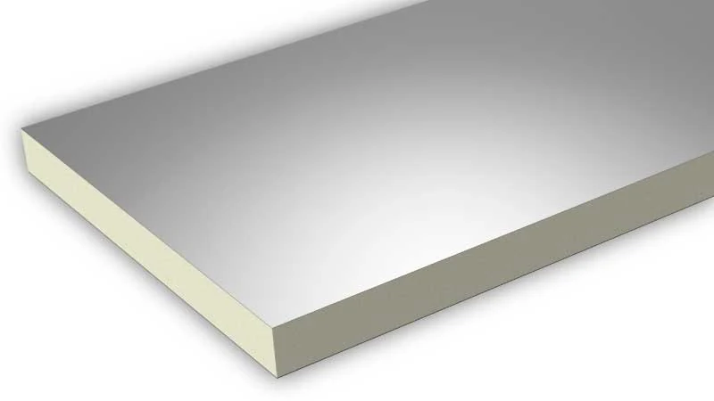
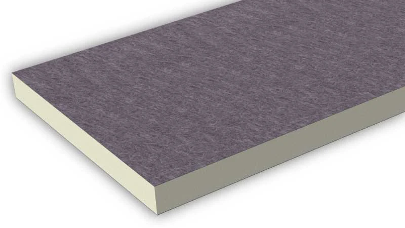
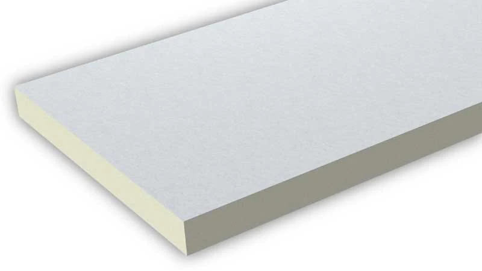
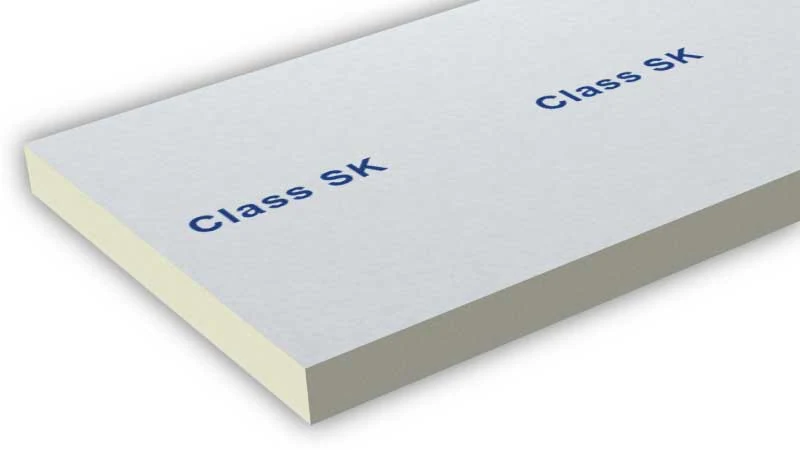

Stiferite GT
Massime prestazioni isolanti
Rivestimento multistrato gas impermeabile. Coperture piane, pareti, pavimenti radianti. λD 0,022 W/mK.
Stiferite produce pannelli isolanti in poliuretano espanso rigido (PIR) a Padova, senza l'impiego di CFC o HCFC. Azienda certificata ISO 9001, ISO 14001 e ISO 45001, con marcatura CE su tutta la gamma.
Una selezione della gamma pannelli Stiferite disponibile tramite Asfalti Mirko.

Massime prestazioni isolanti
Rivestimento multistrato gas impermeabile. Coperture piane, pareti, pavimenti radianti. λD 0,022 W/mK.

Massime prestazioni isolanti e freno al vapore
Rivestimento a base di alluminio. Per applicazioni che richiedono uno schermo al vapore.

Per applicazioni a fiamma
Velo di vetro bitumato idoneo alla sfiammatura. Sotto manti impermeabili bituminosi.

Versatilità applicativa
Velo vetro saturato su entrambe le facce. Coperture piane, a falde, pareti e pavimenti.

Sistemi Etics cappotto
Per pareti a cappotto e ponti termici. Utilizzato in sistemi cappotto certificati ETA.